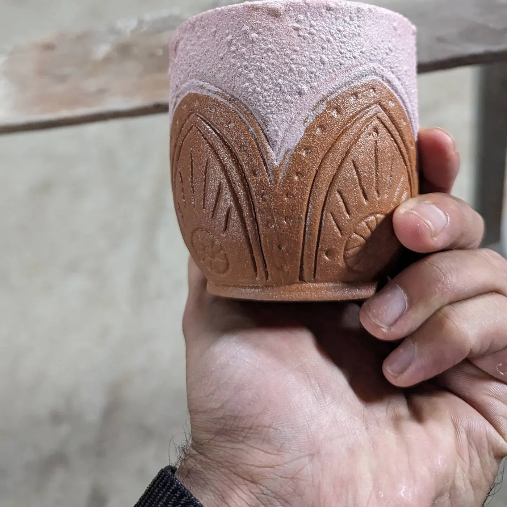

K800 / person
Single wheel experience
One 90-minute guided session to make your first vessel.
- K750 per person for groups of 3 or more
- Clay, tools and firing included
- Return to paint or glaze for K200 per item
In a guided 90-minute session, learn to centre, shape and pull the walls of clay to make your first vessel.
Explore sessions
come clay with usThe best way to understand the rhythm is to feel it. Drag this little wheel or scroll by to set it turning. Then come try the real thing at Casa Luano.
See session optionsBoth options are guided by an instructor and include clay, tools and firing.
One 90-minute guided session to make your first vessel.
Four 90-minute sessions across any four days within a month.
Prices may change; please confirm when booking.

The instructor guides you the whole way. The clay might wobble; that’s part of learning. Your finished piece is fired, and you can return to add colour to it.
See pottery paintingNo. Wheel throwing 101 is an introductory session with an instructor to guide you through the process.
The session includes the instructor, clay, tools and firing.
Yes. Return to paint or glaze your piece for an additional K200 per item. Confirm the current price when booking.
Yes. The listed group rate is K750 per person for three or more people.
Ask Casa Luano about session availability before you come.
Find us on Instagram